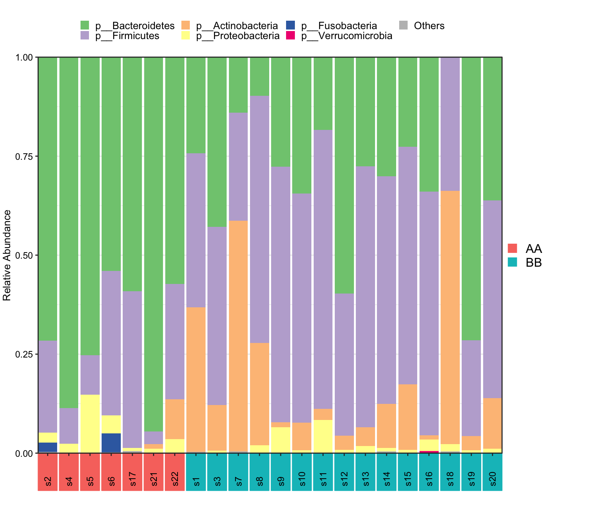

Chapter 8 Differential Analysis
Loading packages
library(XMAS)
library(dplyr)
library(tibble)
library(phyloseq)
library(ggplot2)
library(ggpubr)There are more than 10 approaches to perform differential analysis. Here, we choose two of them and recommend users going to Chapter 10 to see more detials.
8.1 Liner discriminant analysis (LDA) effect size (LEfSe)
- Calculation
metaphlan2_ps_lefse <- run_lefse(
metaphlan2_ps_final,
group = "Group",
group_names = c("AA", "BB"),
transform = "identity",
norm = "none",
wl.p = 0.05,
Lda = 0)
head(metaphlan2_ps_lefse)## TaxaID Block Enrichment LDA_Score EffectSize Log2FoldChange (Median)\nAA_vs_BB
## 1 s__Bacteroides_thetaiotaomicron 7_AA vs 15_BB AA -0.0103249698 1.9418180 5.505858
## 2 s__Dorea_longicatena 7_AA vs 15_BB BB 0.0001704455 1.7435380 NA
## 3 s__Clostridium_bartlettii 7_AA vs 15_BB BB 0.0004552621 0.5784397 NA
## 4 s__Eubacterium_hallii 7_AA vs 15_BB BB 0.0016959113 0.7995960 NA
## 5 s__Megamonas_rupellensis 7_AA vs 15_BB BB 0.0021444361 0.5938727 NA
## 6 s__Collinsella_aerofaciens 7_AA vs 15_BB BB 0.0025432767 0.9034469 NA
## Median Abundance\n(All) Median Abundance\nAA Median Abundance\nBB Log2FoldChange (Mean)\nAA_vs_BB
## 1 0.00247415 0.0453799 0.0009987 3.327766
## 2 0.00078795 0.0000000 0.0081496 -7.307095
## 3 0.00025355 0.0000000 0.0004470 -3.821895
## 4 0.00436885 0.0000000 0.0109294 -3.781465
## 5 0.00000000 0.0005600 0.0000000 5.020069
## 6 0.00738145 0.0000000 0.0112480 -3.336571
## Mean Abundance\n(All) Mean Abundance\nAA Mean Abundance\nBB Occurrence (100%)\n(All) Occurrence (100%)\nAA
## 1 0.0219183273 5.677024e-02 5.654100e-03 90.91 100.00
## 2 0.0065455500 6.044286e-05 9.571933e-03 63.64 42.86
## 3 0.0012202818 1.225143e-04 1.732573e-03 68.18 42.86
## 4 0.0087429000 9.019000e-04 1.240203e-02 63.64 42.86
## 5 0.0008989182 2.650157e-03 8.167333e-05 31.82 57.14
## 6 0.0118099818 1.638929e-03 1.655647e-02 63.64 42.86
## Occurrence (100%)\nBB Odds Ratio (95% CI)
## 1 86.67 0.038 (-6.4;6.4)
## 2 73.33 8.9e+12 (8.9e+12;8.9e+12)
## 3 80.00 600 (610;580)
## 4 73.33 110 (120;100)
## 5 20.00 0.0055 (-10;10)
## 6 73.33 41 (48;34)- Visualization
# in order to show barplot (don't run it in reality)
metaphlan2_ps_lefse$LDA_Score <- metaphlan2_ps_lefse$LDA_Score * 1000
plot_lefse(
da_res = metaphlan2_ps_lefse,
x_index = "LDA_Score",
x_index_cutoff = 2,
group_color = c("green", "red"))
Figure 8.1: Lefse analysis
8.2 Wilcoxon Rank-Sum test
- Calculation
metaphlan2_ps_wilcox <- run_wilcox(
metaphlan2_ps_final,
group = "Group",
group_names = c("AA", "BB"),
transform = "identity",
norm = "none",
p_adjust = "BH",
pvalue_cutoff = 0.05)
head(metaphlan2_ps_wilcox)## TaxaID Block Enrichment EffectSize Statistic Pvalue AdjustedPvalue
## 1 s__Alistipes_finegoldii 7_AA vs 15_BB Nonsignif 1.23094855 73.5 0.1145448 0.4521504
## 2 s__Alistipes_indistinctus 7_AA vs 15_BB Nonsignif 0.78954179 66.0 0.2677815 0.6616137
## 3 s__Alistipes_onderdonkii 7_AA vs 15_BB Nonsignif 1.14756258 63.5 0.4370143 0.7578592
## 4 s__Alistipes_putredinis 7_AA vs 15_BB Nonsignif 1.34298152 54.0 0.9409918 0.9830621
## 5 s__Alistipes_shahii 7_AA vs 15_BB Nonsignif 1.04736939 71.0 0.1751506 0.5801989
## 6 s__Anaerostipes_hadrus 7_AA vs 15_BB Nonsignif 0.02734989 30.5 0.1258306 0.4625882
## Log2FoldChange (Median)\nAA_vs_BB Median Abundance\n(All) Median Abundance\nAA Median Abundance\nBB
## 1 NA 0.00000000 0.0027362 0.0000000
## 2 NA 0.00000000 0.0000000 0.0000000
## 3 5.819157 0.00000825 0.0002823 0.0000050
## 4 NA 0.00016915 0.0000000 0.0002200
## 5 NA 0.00012580 0.0062474 0.0000000
## 6 -3.900867 0.00013665 0.0000144 0.0002151
## Log2FoldChange (Rank)\nAA_vs_BB Mean Rank Abundance\nAA Mean Rank Abundance\nBB Occurrence (100%)\n(All)
## 1 0.52169761 14.50 10.10 45.45
## 2 0.34139504 13.43 10.60 31.82
## 3 0.27924089 13.07 10.77 54.55
## 4 0.03870725 11.71 11.40 54.55
## 5 0.46134594 14.14 10.27 50.00
## 6 -0.63360363 8.36 12.97 72.73
## Occurrence (100%)\nAA Occurrence (100%)\nBB Odds Ratio (95% CI)
## 1 57.14 40.00 0.0028 (-12;12)
## 2 42.86 26.67 0.067 (-5.2;5.4)
## 3 57.14 53.33 0.38 (-1.5;2.3)
## 4 42.86 60.00 0.47 (-0.99;1.9)
## 5 57.14 46.67 0.17 (-3.2;3.6)
## 6 57.14 80.00 31 (38;24)- Volcano
plot_volcano(
metaphlan2_ps_wilcox,
group_names = c("AA", "BB"),
x_index = "Log2FoldChange (Rank)\nAA_vs_BB",
x_index_cutoff = 0.5,
y_index = "Pvalue",
y_index_cutoff = 0.05,
group_color = c("red", "grey", "blue"),
topN = 5)
Figure 8.2: Wilcoxon Rank-Sum test
8.3 Dominant taxa
Display the significant taxa with selection using boxplot.
DA_wilcox <- run_wilcox(
metaphlan2_ps_final,
group = "Group",
group_names = c("AA", "BB"),
transform = "identity",
norm = "none",
p_adjust = "BH",
pvalue_cutoff = 0.05)
plot_topN_boxplot(
ps = metaphlan2_ps_final,
da_res = DA_wilcox,
x_index = "Log2FoldChange (Median)\nAA_vs_BB",
x_index_cutoff = 0.2,
y_index = "Pvalue",
y_index_cutoff = 0.3,
prevalence = TRUE,
topN = 3,
group = "Group")
Figure 8.3: Dominant Taxa
8.4 Multiple differential analysis by one function
here, we provide the run_multiple_da for obtaining the results list from multiple differential analysis methods.
multiple_res <- run_multiple_da(
metaphlan2_ps_final,
group = "Group",
group_names = c("AA", "BB"),
da_method = c("wilcox", "limma_voom", "ttest"),
norm = "none",
transform = "identity",
p_adjust = "none",
pvalue_cutoff = 0.05)
names(multiple_res)## [1] "wilcox" "limma_voom" "ttest"- plot results
plot_multiple_DA(
Multip_DA_res = multiple_res,
y_index = "AdjustedPvalue",
y_index_cutoff = 0.5,
cellwidth = 35,
cellheight = 10,
fontsize_number = 15)

Figure 8.4: Multiple DA results
8.5 Systematic Information
sessionInfo()## R version 4.1.2 (2021-11-01)
## Platform: x86_64-apple-darwin17.0 (64-bit)
## Running under: macOS Monterey 12.2.1
##
## Matrix products: default
## LAPACK: /Library/Frameworks/R.framework/Versions/4.1/Resources/lib/libRlapack.dylib
##
## locale:
## [1] en_US.UTF-8/en_US.UTF-8/en_US.UTF-8/C/en_US.UTF-8/en_US.UTF-8
##
## attached base packages:
## [1] stats graphics grDevices utils datasets methods base
##
## other attached packages:
## [1] ggpubr_0.4.0 ggplot2_3.3.5 phyloseq_1.38.0 tibble_3.1.6 dplyr_1.0.8 XMAS_2.1.0
##
## loaded via a namespace (and not attached):
## [1] utf8_1.2.2 tidyselect_1.1.2 RSQLite_2.2.10 AnnotationDbi_1.56.2
## [5] htmlwidgets_1.5.4 grid_4.1.2 BiocParallel_1.28.3 munsell_0.5.0
## [9] codetools_0.2-18 DT_0.21 withr_2.5.0 colorspace_2.0-3
## [13] Biobase_2.54.0 highr_0.9 knitr_1.37 rstudioapi_0.13
## [17] stats4_4.1.2 robustbase_0.93-9 bayesm_3.1-4 ggsignif_0.6.3
## [21] MatrixGenerics_1.6.0 labeling_0.4.2 optparse_1.7.1 GenomeInfoDbData_1.2.7
## [25] lpsymphony_1.22.0 bit64_4.0.5 farver_2.1.0 pheatmap_1.0.12
## [29] rhdf5_2.38.1 vctrs_0.3.8 generics_0.1.2 TH.data_1.1-0
## [33] xfun_0.30 Maaslin2_1.8.0 R6_2.5.1 GenomeInfoDb_1.30.1
## [37] locfit_1.5-9.5 bitops_1.0-7 rhdf5filters_1.6.0 cachem_1.0.6
## [41] DelayedArray_0.20.0 assertthat_0.2.1 scales_1.1.1 multcomp_1.4-18
## [45] nnet_7.3-17 gtable_0.3.0 sandwich_3.0-1 rlang_1.0.2
## [49] genefilter_1.76.0 splines_4.1.2 protoclust_1.6.3 rstatix_0.7.0
## [53] broom_0.7.12 checkmate_2.0.0 yaml_2.3.5 reshape2_1.4.4
## [57] abind_1.4-5 crosstalk_1.2.0 backports_1.4.1 qvalue_2.26.0
## [61] Hmisc_4.6-0 DiagrammeR_1.0.9 tensorA_0.36.2 tools_4.1.2
## [65] bookdown_0.24 ellipsis_0.3.2 gplots_3.1.1 jquerylib_0.1.4
## [69] biomformat_1.22.0 RColorBrewer_1.1-2 BiocGenerics_0.40.0 Rcpp_1.0.8.2
## [73] plyr_1.8.6 base64enc_0.1-3 visNetwork_2.1.0 zlibbioc_1.40.0
## [77] purrr_0.3.4 RCurl_1.98-1.6 rpart_4.1.16 Wrench_1.12.0
## [81] cowplot_1.1.1 S4Vectors_0.32.3 zoo_1.8-9 SummarizedExperiment_1.24.0
## [85] ggrepel_0.9.1 cluster_2.1.2 magrittr_2.0.2 data.table_1.14.2
## [89] mvtnorm_1.1-3 matrixStats_0.61.0 corncob_0.2.0 RAIDA_1.0
## [93] evaluate_0.15 xtable_1.8-4 XML_3.99-0.9 jpeg_0.1-9
## [97] IRanges_2.28.0 gridExtra_2.3 shape_1.4.6 compiler_4.1.2
## [101] KernSmooth_2.23-20 crayon_1.5.0 htmltools_0.5.2 mgcv_1.8-39
## [105] pcaPP_1.9-74 Formula_1.2-4 tidyr_1.2.0 geneplotter_1.72.0
## [109] libcoin_1.0-9 DBI_1.1.2 biglm_0.9-2.1 MASS_7.3-55
## [113] compositions_2.0-4 Matrix_1.4-0 ade4_1.7-18 getopt_1.20.3
## [117] car_3.0-12 permute_0.9-7 cli_3.2.0 parallel_4.1.2
## [121] igraph_1.2.11 GenomicRanges_1.46.1 pkgconfig_2.0.3 coin_1.4-2
## [125] foreign_0.8-82 foreach_1.5.2 annotate_1.72.0 bslib_0.3.1
## [129] multtest_2.50.0 XVector_0.34.0 stringr_1.4.0 digest_0.6.29
## [133] vegan_2.5-7 Biostrings_2.62.0 rmarkdown_2.13 htmlTable_2.4.0
## [137] edgeR_3.36.0 gtools_3.9.2 modeltools_0.2-23 lifecycle_1.0.1
## [141] nlme_3.1-155 jsonlite_1.8.0 Rhdf5lib_1.16.0 carData_3.0-5
## [145] limma_3.50.1 fansi_1.0.2 pillar_1.7.0 lattice_0.20-45
## [149] KEGGREST_1.34.0 fastmap_1.1.0 httr_1.4.2 DEoptimR_1.0-10
## [153] survival_3.3-1 glue_1.6.2 png_0.1-7 iterators_1.0.14
## [157] glmnet_4.1-3 bit_4.0.4 stringi_1.7.6 sass_0.4.0
## [161] metagenomeSeq_1.36.0 blob_1.2.2 DESeq2_1.34.0 latticeExtra_0.6-29
## [165] caTools_1.18.2 memoise_2.0.1 ape_5.6-2